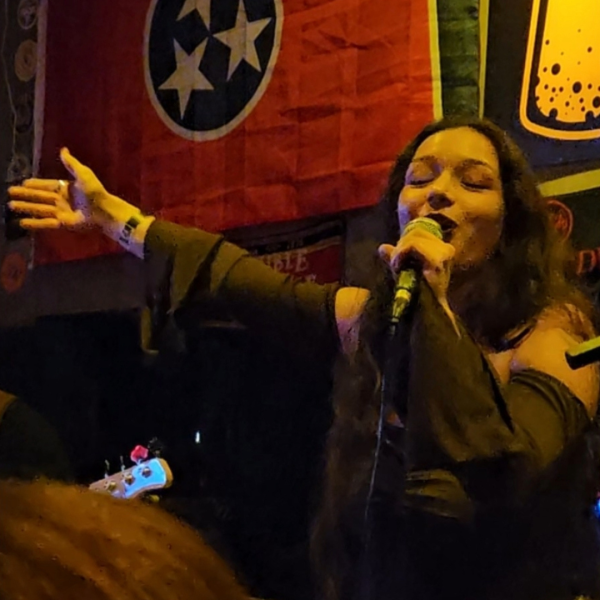
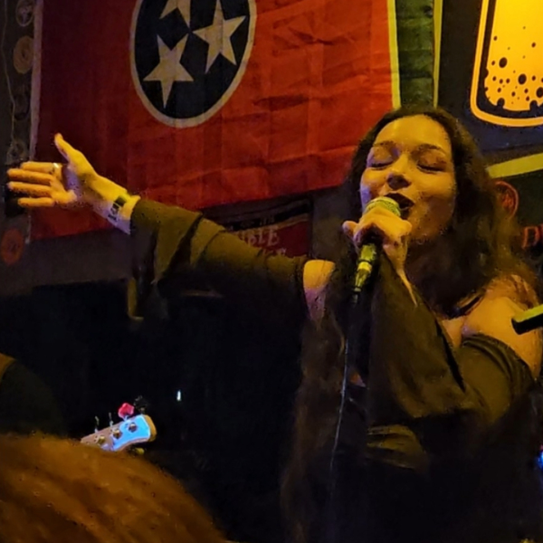

Sinopse dos atos
Ato I: O Encontro
Gosto de dizer que a Ludmyla e a Luisa começaram como uma boa comédia romântica (nunca mais direi o nome do app) e quando o rosto da Luisa apareceu para Ludmyla e elas começaram a conversar, a Ludmyla sabia que a Luisa seria o papel principal dessa peça de teatro.
E a conversa... Parecia que elas não estavam se conhecendo, não precisou de roteiros, o ritmo simplesmente fluiu. O mágico (e levemente cômico) foi descobrir que elas estavam no mesmo 'espetáculo' há anos, mas em cenas diferentes. Os amigos, os lugares, todos exatamente os mesmos. O universo, aparentemente, as colocaram no mesmo 'elenco' por anos, mas o Diretor (Deus, Destino, Oxalá) estava esperando o timing perfeito para o encontro.
Os três meses seguintes foram o ensaio mais lindo. A Ludmyla, claro, já estava decorando todas as falas do 'eu te amo' e escolhendo a Luisa como sua 'co-estrela' permanente rapidamente, ela teve sua coragem acentuada um dia e perguntou se poderiam enfim, ter ser amor concretizado.
...Pausa dramática.
A Luisa disse não.
O coração da Ludmyla quase fez um monólogo de desistência. Ela não estava pronta para sair de cena, mas estava com medo de ser machucada. Mas enquanto esses pensamentos a rodiavam a Luisa mudou seu roteiro.
Luisa, a alma que sempre conseguiu fazer com que Ludmyla a amasse, entregou uma carta à Ludmyla. Um monólogo vulnerável, lindo, confessando que queria ser sua namorada sim, mas que certas palavras ainda a assustavam. Após isso, nos bastidores, enquanto Ludmyla planejava um segundo pedido, Luisa foi mais ágil e, como a verdadeira estrela que é, roubou a cena. No dia 18 de Novembro de 2022, ela fez a pergunta. E o 'sim' da Ludmyla (cheio de xingamentos por não saber demonstrar muito seu afeto) foi, sem dúvida, a 'estreia' mais feliz e emocionante da vida dela.
Ato II: A Jornada
O 'sim' foi apenas o começo. O verdadeiro desafio da vida real veio depois: trabalho, faculdade, a correria. A Ludmyla e a Luisa se tornaram o porto seguro uma da outra nos fins de semana. Mas a distância da semana nunca diminuiu o que elas sentiam; só provou o quão forte era o amor que estavam construindo. Elas aprenderam a cuidar uma da outra.
...E aqui, se me permite, sou eu, a Ludmyla, falando por um instante.
Porque preciso que todos saibam... a Luisa me curou. Por muito tempo, eu vivi com uma ansiedade que me prendia, precisei de dois remédios diferentes só para encontrar meu eixo. Mas o amor dela, o jeito carinho dela... me trouxeram de volta. Hoje, não uso mais nenhum.
E eu, por minha vez, tento ser o ponto de leveza dela. Quando o mundo e a pressão apertam a Luisa, eu gosto de pensar que sou eu quem a lembra de respirar, de sorrir e de que nem tudo precisa ser tão pesado.
Se eu pudesse definir nosso amor nesses últimos 3 anos, a palavra seria Diálogo.
Nós já passamos por brigas, claro. A Ludmyla e a Luisa não são perfeitas. Mas nós nunca desistimos. Nós sempre sentamos, conversamos e encontramos uma solução, sempre com o objetivo de sermos melhores uma para a outra.
Nós saímos, somos sociáveis, amamos uma boa companhia. Mas o nosso amor é o que acontece quando estamos só nós duas, e ele é genuinamente leve, divertido e gentil. E é a melhor parte da minha vida.
 
